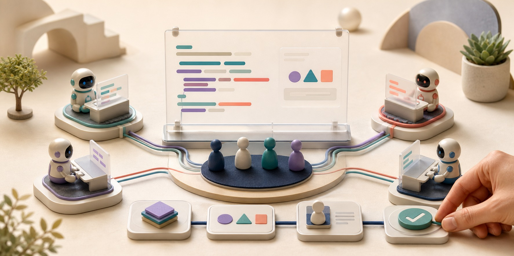

AI 코딩이 팀 채널로 들어왔다: Slack Code가 바꾸는 검토와 책임
코딩 에이전트는 빠르게 발전했지만 작업 장면은 대체로 한 사람의 터미널과 브라우저 탭 안에 갇혀 있었다. Slack이 공개한 ‘Slack Code’는 그 비공개 세션을 프로젝트별 코드 채널로 옮긴다. 팀원이 같은 자리에서 에이전트의 계획과 대화를 보고, 코드 차이와 실행 미리보기를 검토하고, 방향을 바꾸거나 멈추고, 배포 전 승인을 내리게 한다. 새 기능의 핵심은 AI가 코드를 더 많이 쓰는 것이 아니라, 누가 AI에 무엇을 시켰고 어떤 근거로 받아들였는지를 팀의 기록으로 남기는 데 있다.

Slack의 공식 발표와 사용 도움말에 따르면 사용자는 기존 대화에서 지원 에이전트를 호출해 특정 작업을 위한 코드 채널을 만들 수 있다. 채널에는 계획, 코드 diff, Canvas, HTML 실행 미리보기와 파일·링크가 정리된다. 일이 끝나면 사용자가 닫거나 보관할 수 있고, 7일 동안 활동이 없으면 사이드바에서 자동으로 빠진다. 보관된 메시지는 워크스페이스의 보존 정책 범위에서 계속 검색할 수 있다.
2026년 8월 24일 기준 실제 코드 채널을 만들 수 있는 지원 에이전트는 Anthropic의 Claude, Cognition의 Devin, GitHub Copilot, Vercel 네 가지다. Salesforce 발표문은 ChatGPT도 창립 파트너로 묶지만, Slack 공식 블로그는 OpenAI 지원을 ‘곧 제공’으로 분류하고 현재 도움말도 ChatGPT를 지원 목록에서 제외한다. 파트너 발표와 현재 사용 가능 상태를 구분해야 한다.
Slack 공식 블로그에 적힌 발표일은 8월 20일이다. 별도의 공식 시각은 없지만 VentureBeat는 8월 20일 오후 5시 미국 태평양시간, 한국시간으로 21일 오전 9시에 공개 소식을 전했다. 어제와 비교해 바뀐 것은 개인이 에이전트 결과를 복사해 팀에 보고하는 방식에서, 팀이 처음부터 같은 세션을 공동으로 지시하고 검토하는 방식으로 이동한 점이다.
개인 프롬프트가 팀의 작업 기록이 되는 과정
Slack Code는 기존 스레드에 긴 에이전트 출력을 쌓지 않고, 한 프로젝트를 위한 전용 작업 공간을 만든다.
달라진 책임선: 에이전트가 만든 결과를 마지막에 공유하는 것이 아니라, 요청·수정·승인 전체가 처음부터 공동 작업의 일부가 된다.
코드 채널은 일반 채팅방과 무엇이 다른가
일반 Slack 스레드는 빠른 질의응답에는 좋지만 여러 차례 코드를 바꾸는 작업에서는 대화와 결과가 섞인다. 누가 최신 버전을 봤는지, 어느 파일이 바뀌었는지, 미리보기가 어느 커밋을 가리키는지 추적하기 어렵다. 코드 채널은 한 프로젝트와 한 에이전트 세션을 연결해 출력을 구조화한다.
공식 설명에는 대화, 계획, 코드 diff와 실행 화면이 각각 보이는 구성이 나온다. 팀원은 삭제된 줄과 추가된 줄을 나란히 확인하고, HTML 결과를 Slack 안에서 미리 볼 수 있다. 비개발자는 화면과 요구사항을 검토하고, 개발자는 구현과 보안 영향을 본다. 같은 결과를 서로 다른 역할이 같은 맥락에서 판단할 수 있다는 것이 장점이다.
에이전트 호출도 프로젝트 생성과 연결된다. 대화 중 Claude나 Devin 같은 지원 에이전트를 태그하면 작업용 코드 채널이 만들어진다. 완료 후 사용자가 직접 닫거나 보관할 수 있으며, 7일 동안 활동이 없으면 사이드바에서 자동으로 제외된다. 보관은 기록을 지우는 것이 아니라 새 메시지를 막으면서 기존 작업 이력을 볼 수 있게 남기는 방식이다.
이 기록은 단순한 편의 이상이다. 에이전트가 왜 특정 라이브러리를 바꿨는지, 누가 요구사항을 수정했는지, 어떤 미리보기를 보고 배포를 승인했는지 다시 찾을 수 있다. 개인 터미널의 셸 기록보다 제품·디자인·운영 판단을 함께 담지만, 그만큼 채널 보존과 검색 권한도 중요해진다.
누구나 쓸 수 있다는 말에는 두 개의 가격표가 있다
Slack Code는 지원 에이전트가 설치된 모든 Slack 구독의 일반 멤버에게 제공된다. 다만 각 파트너의 계정·플랜·사용량 비용과 관리자 설치 승인은 별도이며, 게스트는 Slack의 AI 앱과 에이전트를 사용할 수 없다. 무료 Slack 워크스페이스라고 해서 유료 코딩 에이전트의 사용량까지 함께 제공되는 것은 아니다.
따라서 도입 비용은 Slack의 좌석 요금만으로 계산할 수 없다. 에이전트 구독이나 사용량, 코드 실행 환경, 저장소 접근, 미리보기 인프라, 보안 검사와 사람의 리뷰 시간을 합쳐야 한다. 여러 에이전트를 붙이면 같은 작업을 어느 서비스에 보낼지 결정하는 운영 정책도 필요하다.
가용성은 파트너별로 다르다. Computerworld의 출시 보도와 Slack의 현재 도움말은 Claude·Devin·Copilot·Vercel을 즉시 사용할 수 있는 목록으로 설명한다. ChatGPT는 창립 파트너지만 아직 ‘곧 제공’ 단계다. 네 에이전트도 요구 플랜, 관리자 설정, 저장소·실행 환경 권한이 서로 다르므로 설치 화면과 각 공급자 문서를 확인해야 한다.
공식 페이지도 지역과 고객 계약에 따라 가용성이 달라질 수 있다고 단서를 둔다. 실제 구매 결정은 발표 이미지보다 현재 설치 화면, 관리자 문서, 파트너 계정의 권한과 약관을 기준으로 해야 한다. 이 차이를 숨기면 ‘모든 플랜’이라는 문장이 실제 비용과 이용 범위를 과장한다.
Slack Code가 주는 것과 팀이 따로 준비할 것
협업 화면, 에이전트 이용권, 실제 배포 권한은 하나의 상품이 아니다.
프로젝트 세션, 대화·계획·diff·미리보기, 자동 보관과 검색 가능한 기록을 제공한다.
Claude·Devin·Copilot·Vercel 등의 계정, 사용량, 저장소와 실행 환경 접근을 따로 구성한다.
테스트·보안·라이선스·운영 영향은 전문가가 보고, 고위험 변경은 기존 보호 규칙으로 통제한다.
채널에서 미리보기가 잘 보인다는 사실은 테스트 통과나 프로덕션 안전성을 뜻하지 않는다. 기존 CI와 코드 리뷰를 연결해야 한다.
‘멀티플레이어 코딩’이 해결하려는 진짜 병목
코딩 에이전트가 빨라질수록 사람의 병목은 작성에서 검토로 이동한다. 한 개발자가 짧은 시간에 큰 변경을 만들 수 있어도 동료가 의도와 위험을 이해하지 못하면 병합 대기열만 길어진다. Slack Code는 결과물을 팀의 원래 대화와 붙여 검토자가 배경을 다시 수집하는 시간을 줄이려 한다.
제품 관리자에게는 티켓 번역 과정이 짧아진다. 고객 불만이 담긴 채널에서 직접 수정 세션을 열고 요구사항을 설명할 수 있다. 디자이너는 미리보기를 보며 색상과 흐름을 지적하고, 개발자는 diff와 테스트를 본다. 단, 비개발자가 에이전트에 지시할 수 있다는 사실과 저장소 변경 권한을 가져야 한다는 사실은 다르다.
팀 지식도 축적될 수 있다. 비슷한 버그가 다시 생겼을 때 보관된 코드 채널을 검색하면 당시의 증상, 선택한 해결책과 반대 의견을 함께 볼 수 있다. 소스 코드의 커밋 메시지가 ‘무엇을’ 남긴다면 코드 채널은 ‘왜’와 ‘누가 승인했는가’를 보완한다.
반대로 모든 세션을 공개 채널로 만들면 잡음이 늘 수 있다. 작은 수정마다 장문의 에이전트 계획과 중간 산출물이 쌓이면 중요한 의사결정이 다시 묻힌다. 프로젝트 단위, 보관 기준, 알림 대상, 최종 요약 형식을 정하지 않으면 새로운 투명성이 새로운 정보 과부하가 된다.
기존 권한을 상속한다는 약속의 양면
코드 채널에는 Slack의 채널 공개 범위와 관리자 통제가 적용된다. 그러나 외부 저장소와 배포 시스템에서 사용하는 신원·자격 증명은 파트너마다 다르다. Claude Tag의 조직 신원, GitHub에 연결한 계정, Vercel의 범위 제한 신원과 승인자 계정처럼 실제 행동 주체가 달라질 수 있으므로 각 공급자의 권한 문서를 따로 확인해야 한다.
채널 구성원들의 권한도 같지 않을 수 있다. 한 사람은 저장소 쓰기 권한이 있고 다른 사람은 읽기만 가능하다. 게스트는 AI 앱과 에이전트를 직접 사용할 수 없지만 채널 공개 범위와 공유된 결과를 어디까지 볼 수 있는지는 별도 문제다. 여러 일반 멤버가 같은 세션을 조종할 때 누구의 저장소·배포 권한으로 동작하는지 명확해야 한다.
대화 맥락 자체도 민감하다. 고객 이름, 장애 로그, 비밀 URL, 화면 캡처, 미공개 제품 계획이 에이전트 입력에 포함될 수 있다. 채널 접근을 상속한다는 사실이 파트너 모델의 데이터 처리, 보존, 학습 제외 정책까지 자동으로 통일한다는 뜻은 아니다. Slack과 각 에이전트 공급자의 데이터 흐름을 함께 봐야 한다.
보관된 채널이 감사 기록이 된다는 장점도 보존 정책과 충돌할 수 있다. 무료 플랜의 검색·보관 범위, 기업의 eDiscovery와 법적 보존, 개인정보 삭제 요청, 퇴사자 접근 회수에 따라 같은 기록의 수명이 달라진다. 규제 산업은 ‘검색 가능’보다 ‘누가 언제 열었는지 입증 가능’한지를 확인해야 한다.
diff와 미리보기가 있어도 리뷰는 줄지 않는다
코드 diff는 변경 범위를 보여주지만 실행되지 않은 경로의 오류, 의존성 취약점, 데이터 마이그레이션 위험까지 자동으로 설명하지 않는다. HTML 미리보기는 눈에 보이는 회귀를 찾는 데 유용하지만 접근성, 성능, 서버 상태, 인증과 결제 흐름을 보증하지 않는다.
에이전트가 만든 변경도 같은 CI를 통과해야 한다. 단위·통합·브라우저 테스트, 타입과 린트, 비밀 탐지, 의존성 검사, 배포 전 환경 검증을 코드 채널의 승인 조건에 연결해야 한다. 채널에서 “좋아 보인다”는 반응만으로 PR과 프로덕션 배포가 이어지지 않도록 분리한다.
사람 승인의 질도 중요하다. 에이전트가 큰 diff를 한 번에 만들면 리뷰어는 표면만 보고 승인하기 쉽다. 요구사항, 수정한 파일, 실행한 테스트, 남은 위험, 되돌리기 방법을 에이전트가 짧고 구조적으로 제출하게 해야 한다. 승인 버튼이 있다는 사실보다 승인자가 판단할 자료가 있는지가 중요하다.
프로덕션 권한은 가장 좁게 둔다. 공식 설명도 배포 같은 고위험 행동은 전문가의 서명을 거치도록 제시한다. 처음에는 브랜치 생성과 PR 열기까지만 허용하고, 병합과 배포는 기존 보호 규칙과 담당자에게 남기는 것이 안전하다.
한국 팀이 먼저 시험할 시나리오
첫 시험은 작은 프런트엔드 버그가 적합하다. 재현 설명과 화면 캡처가 있는 Slack 대화에서 코드 채널을 만들고, 에이전트가 문제를 정확히 이해하는지 본다. 한 명은 요구사항, 한 명은 diff, 한 명은 미리보기를 검토해 역할별로 무엇이 보이고 빠지는지 기록한다.
두 번째는 권한 시험이다. 개발자와 제품 관리자 계정으로 같은 세션을 조종하고, 게스트 계정에서는 AI 앱 호출이 차단되는지 확인한다. 읽기만 가능한 사람이 저장소 변경을 지시했을 때 작업이 거부되는지, 채널에서 제외된 비공개 저장소 정보를 에이전트가 가져오지 않는지 본다.
세 번째는 실패와 중단이다. 모호한 요구, 충돌하는 두 사람의 지시, 테스트 실패, 장시간 작업을 일부러 만든다. 누가 세션을 멈출 수 있는지, 부분 변경이 브랜치에 남는지, 재개할 때 어떤 맥락을 쓰는지 확인해야 실제 사고 대응이 보인다.
네 번째는 비용과 시간이다. 같은 작업을 개인 IDE 에이전트와 Slack Code로 각각 수행해 생성 시간, 리뷰 대기, 수정 회수, 에이전트 사용량, 팀원의 총 검토 시간을 비교한다. 채널이 투명해져도 회의와 알림이 늘면 전체 생산성은 오히려 낮아질 수 있다.
플랫폼 경쟁은 모델보다 ‘작업이 모이는 곳’으로 이동한다
Slack Code는 코딩 모델 자체를 만들지 않는다. 여러 공급자의 에이전트를 팀 대화와 승인 흐름에 모으는 오케스트레이션 층을 차지하려 한다. 어떤 모델이 코드를 쓰든 프로젝트 맥락과 사람의 피드백, 작업 기록이 Slack에 남으면 협업 플랫폼의 영향력은 커진다.
개방형 파트너 전략은 장점과 잠금 효과를 함께 만든다. 팀은 Claude, Devin, Copilot, Vercel 가운데 작업에 맞는 도구를 고를 수 있다. 그러나 중요한 결정과 감사 기록이 코드 채널에 축적되면 다른 협업 도구로 옮길 때 대화 맥락을 내보내고 재사용하는 문제가 생긴다.
GitHub, Microsoft Teams, Atlassian과 개발자 도구 업체도 비슷한 자리를 노릴 수 있다. 저장소가 중심인지, 티켓이 중심인지, 대화가 중심인지에 따라 에이전트가 받는 맥락과 사람의 통제 방식이 달라진다. Slack의 승부는 채팅 UI가 아니라 저장소·CI·배포·보안 시스템을 얼마나 정확히 연결하는가에 달렸다.
앞으로 확인할 지표
첫째, 실제 파트너 가용성이다. 현재 네 에이전트가 어느 플랜과 지역에서 설치되는지, 기능 차이와 사용량 제한이 무엇인지 확인해야 한다. ChatGPT는 Slack 공식 블로그가 ‘곧 제공’으로 명시한 만큼, 현재 도움말의 지원 목록에 들어오고 실제 설치 화면에서 코드 채널 생성이 확인되는 시점이 다음 업데이트 기준이다.
둘째, 다중 사용자 권한 모델이다. 공동 채널의 요청이 누구의 자격 증명으로 저장소와 실행 환경에 접근하는지, 게스트와 봇의 권한이 어떻게 제한되는지, 승인 이벤트가 어떤 사용자에게 귀속되는지 문서화돼야 한다.
셋째, 내보내기와 감사다. 코드 채널의 대화, 계획, diff, 미리보기와 승인 기록을 표준 형식으로 내보낼 수 있는지 봐야 한다. Slack 보존 기한이 끝나도 Git 커밋과 배포 기록에서 필요한 근거를 연결할 수 있어야 한다.
넷째, 결과 품질이다. 에이전트가 만든 코드의 결함률과 롤백률, 리뷰 시간, PR 크기, 보안 문제, 비개발자 지시로 생긴 재작업을 측정해야 한다. 팀에 공개됐다는 사실만으로 더 좋은 코드가 되지는 않는다.
필자의 결론은 Slack Code가 ‘코딩의 대중화’보다 ‘AI 작업의 조직화’를 보여준다는 것이다. 에이전트는 이미 혼자 빠르다. 이제 경쟁은 여러 사람이 그 속도를 이해하고 제어하며 책임질 수 있는가로 옮겨간다. 가장 좋은 코드 채널은 AI가 가장 많이 말하는 곳이 아니라, 팀이 왜 이 변경을 받아들였는지 가장 짧고 분명하게 남는 곳이다.
출처와 더 읽을 자료
- Slack 공식 블로그: Slack Code 발표일, 기능과 현재 지원 파트너
- Slack 도움말: 코드 채널 생성·종료·보관, 지원 에이전트와 구독 범위
- Slack 제품 페이지: Code channels 화면과 협업 방식
- Salesforce: Introducing Slack Code, 창립 파트너와 가용성 단서
- VentureBeat: 개인 터미널에서 팀 대화로 이동한 코딩 에이전트 분석
- Computerworld: Slack Code의 출시 파트너와 팀 협업 범위
- Anthropic: Slack용 Claude Tag의 대상 플랜과 관리자 설정
- Cognition: Devin의 Slack 통합 방식
- GitHub: Copilot cloud agent와 Slack 연동 문서
- Vercel: Slack 통합과 에이전트 동작 범위